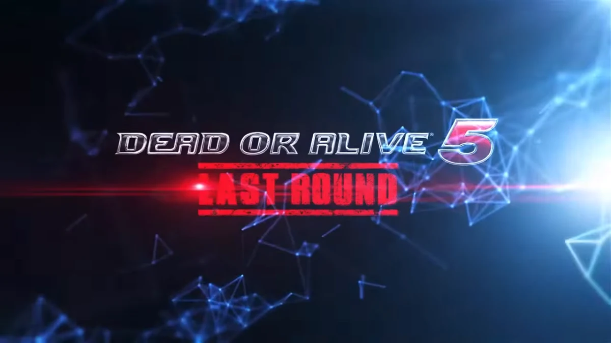

Design & identity
Brand identities, typography, print, and digital design built around a clear visual idea.
↗Independent creative studio · Joel Pagán
Design, motion, and imagery shaped by one creative vision—from the first idea to the final frame.
DESIGN re-IMAGINED
01 / Selected work
A focused selection across compositing, generative imagery, identity, and restoration.
Selection is provisional for this preview.

In focus / 01Professional documentary work
A four-part documentary series exploring the Dead or Alive fighting-game community, produced with Bryan Dawson and hosted on Team Ninja's official YouTube channel.
Joel handled field production alongside Bryan, then handled all editing and post-production: color grading, opening titles, broadcast graphics, transitions, visual effects, and end credits.
02 / Services
One point of contact across disciplines, with the details considered from the beginning.
Brand identities, typography, print, and digital design built around a clear visual idea.
↗Editing, title design, motion graphics, compositing, and visual storytelling that moves.
↗Photography, retouching, restoration, and careful finishing for images that need another life.
↗Purposeful web experiences and AI-assisted workflows shaped around the work—not the tool.
↗“Design is intelligence made visible.” — Lou Danziger
03 / Behind the work
I'm Joel Pagán, the creative behind Silent Legend. My work moves between graphic design, motion, photography, visual effects, web development, and AI-assisted production.
I work best where those disciplines meet—where an identity needs to move, an image needs another world, or a website needs a story worth exploring.
Working directly with you from concept to delivery.
Joel Pagán Silent Legend · Pennsylvania
04 / Your next idea
Have a project, opportunity, or idea in mind? Tell me what you're building and where you need the pieces to connect.